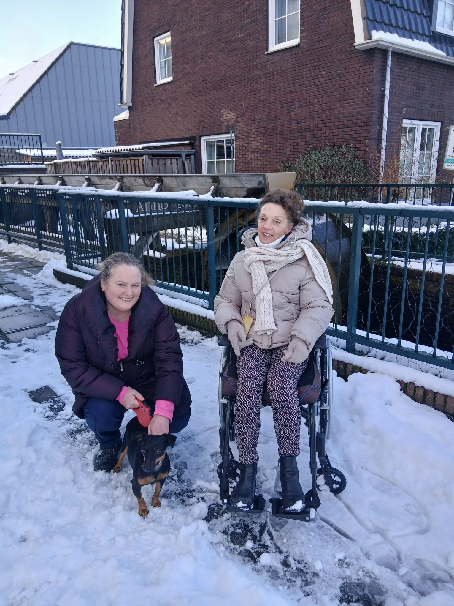

Rita & Ilona naar de Azoren.
Een reis over vriendschap, niet over ziekte.
Wij zijn Rita en Ilona. Twee vriendinnen met fysieke kwetsbaarheden, maar met een sterke band en een diepe wens om het leven nu te leven.

Rita leeft met progressieve MS. De ziekte maakt de toekomst onzeker: wat vandaag nog lukt, kan morgen onmogelijk zijn. Zorg en begeleiding zijn dagelijks noodzakelijk.
Ilona heeft eveneens kwetsbaarheden die extra ondersteuning vragen. We kennen elkaars grenzen en kracht, en juist daarom is onze vriendschap zo waardevol.
Het gaat niet om wat we missen, maar om wat we nog samen kunnen ervaren.
Door het progressieve verloop van MS is uitstel geen optie. Deze reis moet plaatsvinden zolang het nog haalbaar is.
De Azoren bieden ruimte en stilte. Essentieel voor herstel, ontspanning en mentale ademruimte.
Tijd om onze vriendschap te vieren, los van ziekenhuizen en dagelijkse zorg.
Voor deze reis is intensieve zorg en begeleiding nodig. De totale kosten worden geschat op €32.000.
Steun is volledig vrijwillig. Bijdragen zijn bedoeld voor noodzakelijke zorg, begeleiding, aangepast vervoer en verblijf.
Link naar donatieplatform wordt zo snel mogelijk geplaatst